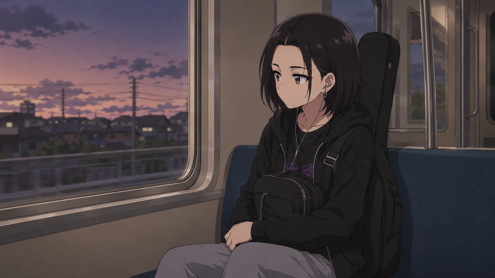

Кьют-рок после 2019

Самый верный способ убить жанр — объявить один короткий период его единственно правильной формой.
Что сохранить
Близость. Песня разговаривает с человеком, а не с воображаемым стадионом.
Мелодию. Хук всё ещё сильнее концепции.
Контраст. Милое рядом с громким, смешное рядом с больным.
Бытовую драму. Конкретный повод сильнее универсального заявления.
Что выбросить
Не нужна одна причёска, один возраст и одна одежда.
Жанр выдержит шугейз, гараж, металл, чистый поп.
Медленная песня тоже имеет право.
2019 не должен присутствовать в каждой новой песне.
Что добавить
Более грязные группы. Странную электронику. Мужские голоса. Взрослых героев. Песни не только про романтику. Региональные сцены. Свой визуальный язык у каждого проекта.
Чем больше людей смогут использовать слово «кьют-рок» и не звучать одинаково, тем крепче жанр.
Наследие сохраняют, когда следующая песня тоже нужна.
Тест на будущее
Представьте новую песню без ссылок на прошлую волну. Она всё равно интересна? Если да — жанр движется. Если единственная радость в том, что «прям как тогда», это фан-сервис, а не стратегия на десять лет.
2019 — точка происхождения современной русской идеи кьют-рока, а не техническое задание.